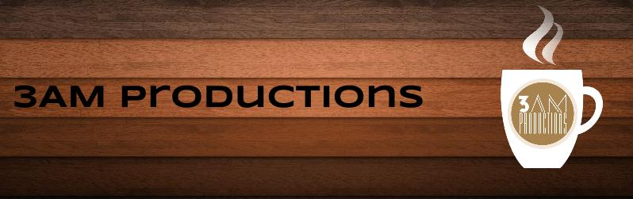
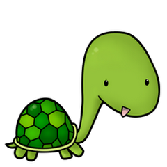

Introduction
Welcome to the Felix, a game about a green sea turtle named Felix who is suffering from amnesia, and the only memory he has is his name. Throughout the game Felix must swim through ocean levels in order to learn more about his past. From all of us here at 3AM Productions we hope you enjoy the game!
About Felix
Felix is the brainchild of Hernando Castano and Ansh Juneja over at 3AM Productions. Felix is a simple platform style game with a twist.

D'awww, look at Felix!
Felix is a game intended to be played by children eight to twelve years of age. It is supposed to teach them about the oceans of the world, as well as test their problem solving and (literary skills) through the word search.
About 3AM Productions
3AM Productions is a small studio run by two friends from Toronto, Ontario. Together their mission is to create a fun and educative game, as well as survive their AP Computer Science course!
Hernando Castano - Developer & Project Lead
Raised in a small outback village on the plains of Central Colombia, Hernando made his first "Hello World" program using only sticks and rocks. He now spends his days using the new fancy-shmancy Windows 8.1, and making "Hello World" programs in others languages such as Ruby and JavaScript. When he's not programming, Hernando likes to spend his days counting down to the end of AP Computer Science (for bragging rights of course!).
Ansh Juneja - Developer & Spokesperson
A simple minded fellow, with a desire to program, Ansh spends his nights curled up in front of his computer running countless tests on Dr.Java in hopes to get a good product out to the public. As a child in Delhi, he had to walk uphill both to and from school, this lead to him become the strong and bold character he is today.